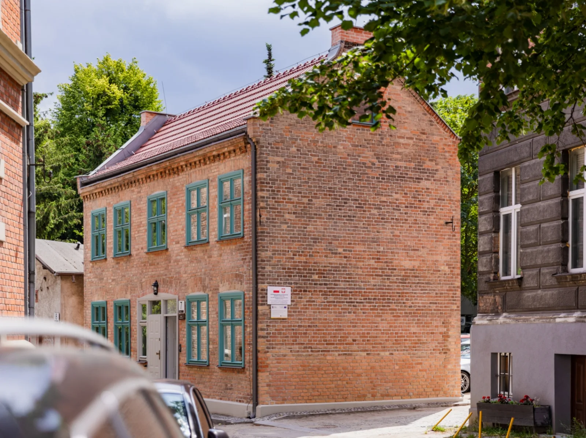
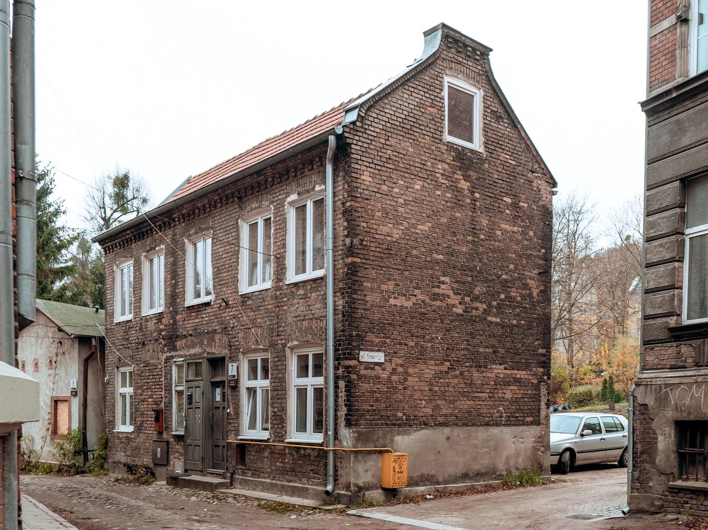
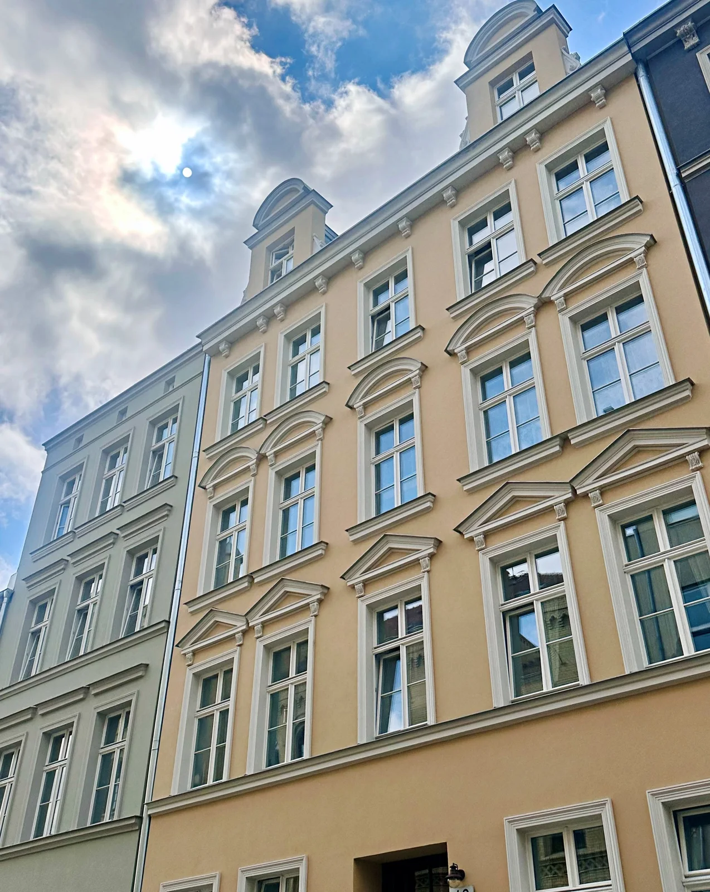
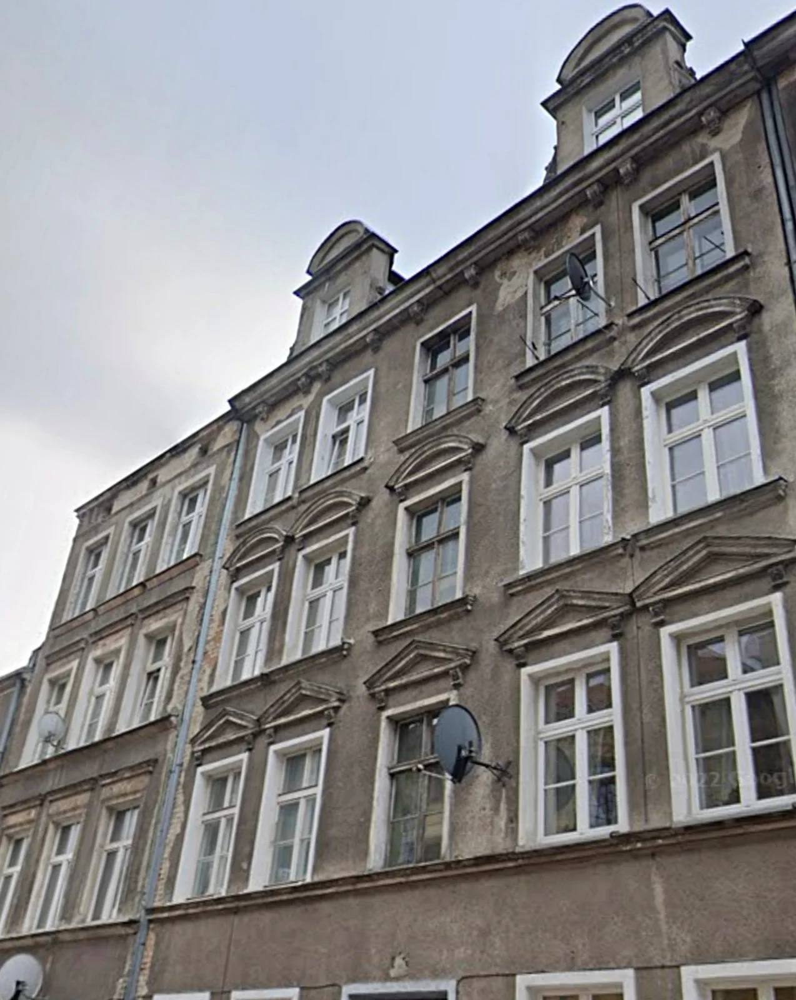
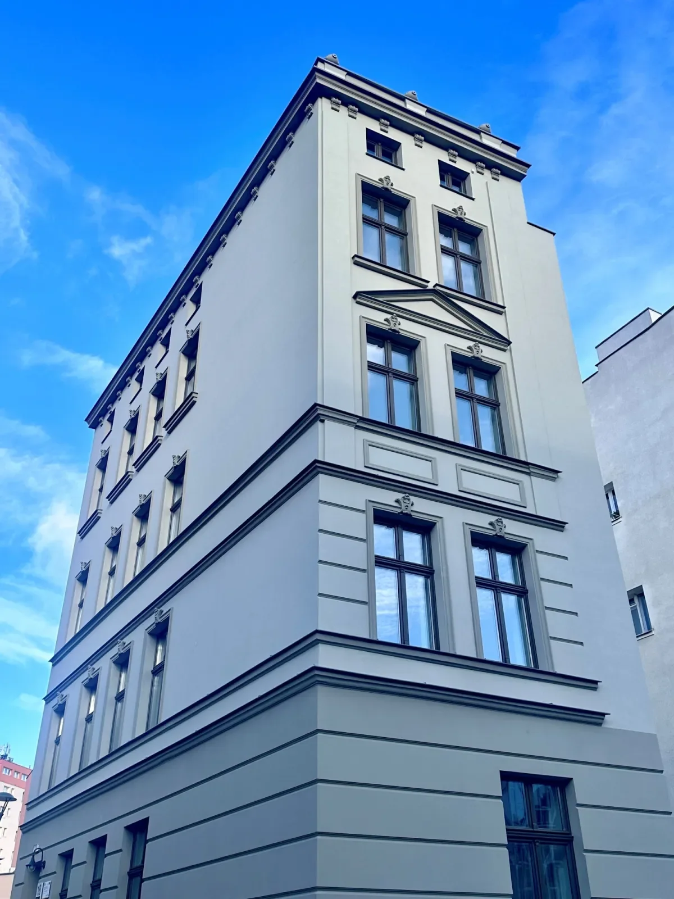
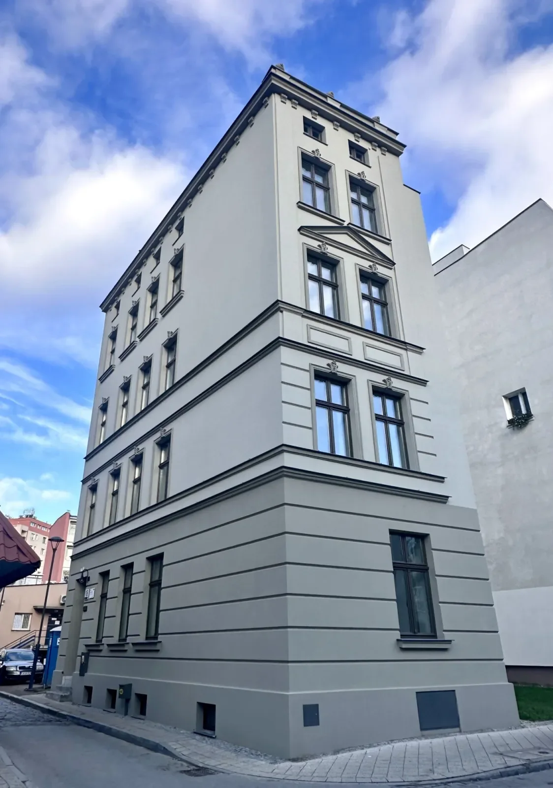
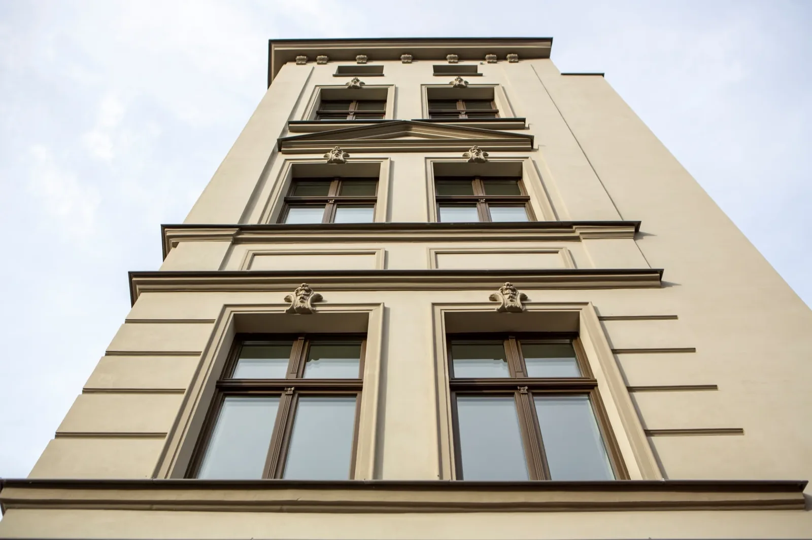

Firma partnerska
PRINZ Polska
ZBD BUDOWNICTWO / OSUSZANIE MURÓW
Suchy budynek.
Solidna robota.
Osuszanie murów metodą cięcia PRINZ
Wykonujemy nową izolację poziomą, która zatrzymuje kapilarne podciąganie wilgoci.

Sprawdzona technologia
mechanicznego cięcia
Dobór rozwiązania
do rodzaju muru
Szerokie zastosowanie
domy / kamienice / zabytki
01 / PROBLEM
Wilgoć w murach?
Zatrzymaj ją u źródła.
Gdy izolacji poziomej brakuje lub jest uszkodzona, woda może przemieszczać się kapilarnie w górę muru.
Nowa warstwa izolacji poziomej tworzy fizyczną barierę, która odcina drogę wilgoci kapilarnej. Nie usuwa innych źródeł wilgoci ani nie oznacza natychmiastowego wyschnięcia muru — potrzebne jest rozpoznanie przyczyn.
02 / TECHNOLOGIA
Jak działa metoda cięcia PRINZ?
Pięć kolejnych etapów tworzy nową izolację poziomą w istniejącym murze.
- 01
Przygotowanie muru
Ustalenie przebiegu prac, przeszkód i spoiny roboczej.
- 02
Cięcie muru
Cięcie wykonuje się odcinkami, zależnie od rodzaju i grubości muru oraz warunków budowlanych i statyki.
- 03
Płyta izolacyjna
W szczelinę wprowadzana jest oryginalna wodoszczelna płyta PRINZ.
- 04
Klinowanie
Szczelina stabilizowana jest certyfikowanymi klinami poliwęglanowymi.
- 05
Wypełnienie szczeliny
Po zamknięciu szczeliny ubytki wypełnia się zaprawą cementową wtłaczaną pod ciśnieniem.
03 / KORZYŚCI
Fizyczna bariera. Czytelna zasada działania.
Skuteczność
Technologia PRINZ pozwala mechanicznie odciąć wilgoć podciągającą kapilarnie.
Sprawdzona technologia
System wykorzystuje oryginalne płyty izolacyjne PRINZ oraz certyfikowane kliny dopasowane do wykonywanej izolacji.
Trwała bariera
Nowa warstwa izolacji poziomej tworzy fizyczną barierę dla kapilarnego podciągania wody.
04 / W PRAKTYCE
Technologia, którą widać na budowie.
Rozpoznanie problemu, odsłonięcie muru i wykonanie nowej warstwy izolacji to kolejne części jednego procesu.


05 / WIDEO
Technologia w ruchu.
Zobacz, jak wygląda wykonanie izolacji poziomej metodą cięcia PRINZ — od przygotowania muru po zamknięcie szczeliny.
Mechaniczne osuszanie murów — cięcie łańcuchami widiowymi
Mechaniczne osuszanie murów — cięcie liną diamentową
Jak pozbyć się wilgoci ze ścian? Budowa dojrzewalni wołowiny — cz. 1
Certyfikowane kliny PRINZ — gwarancja bezpieczeństwa
06 / REALIZACJE
Przywracamy budynkom ich charakter.
Renowacje historycznych elewacji i kompleksowe remonty kamienic. Przesuń uchwyt, aby porównać stan przed rozpoczęciem prac z efektem końcowym.


RENOWACJA KAMIENICY
Historyczna ceglana elewacja
Oczyszczenie i naprawa cegły, odtworzenie detali oraz stolarki w historycznej kolorystyce.


REMONT ZABYTKOWEJ ELEWACJI
Odtworzenie detalu architektonicznego
Renowacja fasady z zachowaniem podziałów, gzymsów i dekoracyjnych opasek okiennych.
EFEKT KOŃCOWY
Kompleksowo odnowiona kamienica
Trzy spojrzenia na ukończoną realizację — elewację frontową, bryłę budynku i odtworzone detale.



W MEDIACH
O naszych realizacjach napisali
07 / POZOSTAŁE USŁUGI
Nie tylko osuszanie.
ZBD Budownictwo wykonuje również kompleksowe prace budowlane — od remontów kapitalnych i rozbiórek po renowacje zabytków, dachy i elewacje.
Renowacje zabytków
Rozbiórki
Remonty kapitalne
Dachy i elewacje
PARTNER
WSPÓŁPRACA
ZBD Budownictwo jest firmą partnerską PRINZ Polska.
Specjalizujemy się w osuszaniu murów metodą cięcia PRINZ. Realizujemy także remonty kapitalne, rozbiórki, dachy, elewacje i renowacje obiektów zabytkowych.
PRINZPOLSKAtechnologia izolacji poziomej murów
08 / KONTAKT
Masz problem z wilgocią?
Opisz budynek i zostaw kontakt. Wrócimy z informacją, jakie dane będą potrzebne do ustalenia oględzin.
Przekazane dane wykorzystamy wyłącznie do obsługi zapytania.